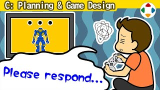
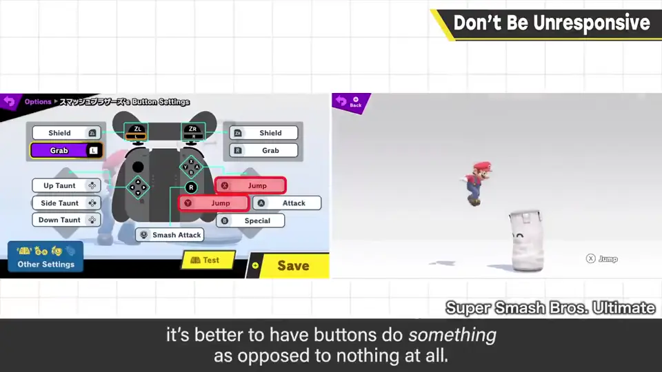
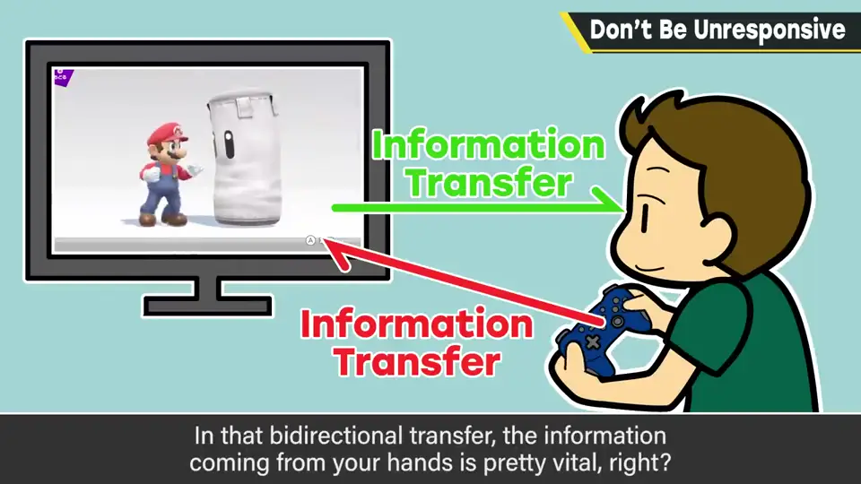
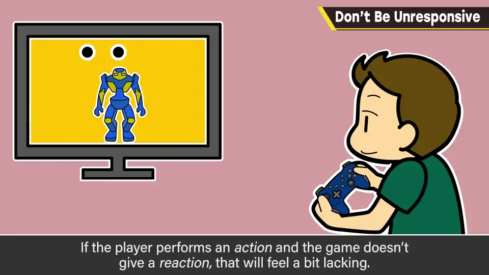
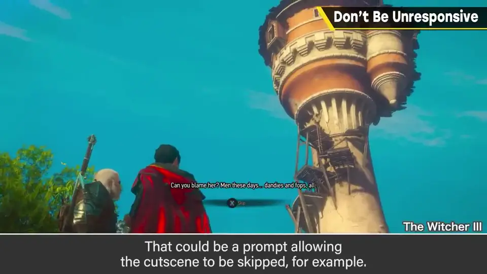
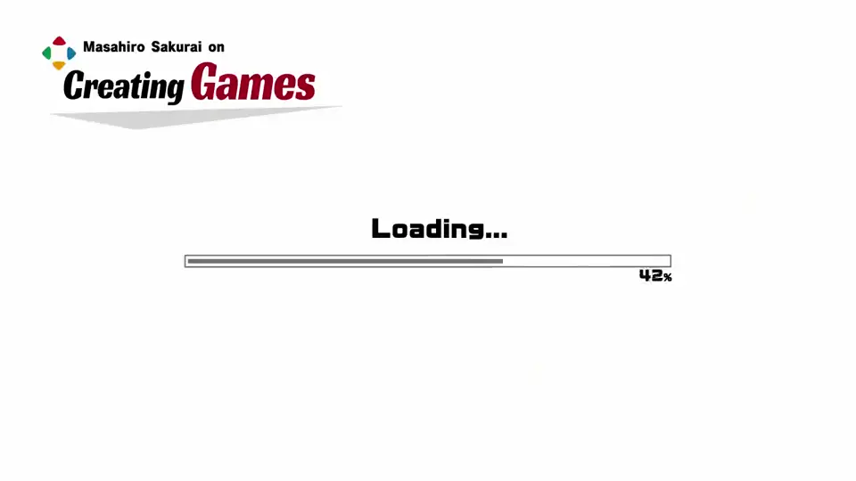

速览
游戏机的按钮相当多，单纯按下的按钮基本也有 10 种左右。菜单等 UI 里，最好把确定键分配给好几个按钮；只有一两个按钮功能的简单动作游戏，让某些按钮功能重复也可以。按了某个按钮，就算它没有功能，有反应比完全没反应好——当然不是说要给所有按钮分配功能。游戏是把手的信息送到电脑、再从眼和耳接收反应的玩乐；在这双向交换中，手发出的信息很重要，每个人也有各自偏好。所以与其「发了信号（操作）却什么都没发生」，不如姑且给些反应：玩家好不容易做了动作，游戏却毫无反应，有点寂寞。若 L 键也是确定或动作键，也许还能单手玩。坦白说可能有让人找哪个按钮是什么的缺点，但樱井认为比纯粹无反应好。特别是过场动画中，比起按了没反应，最好有反应——比如显示跳过之类的选项。玩家按按钮时一定在追求什么。看不出按没按下的含糊反应也应避免。无反应不是绝对 NG，但希望大家加深「游戏要对动作返回反应」的意识。（彩蛋：手柄上的「1-2」代表他家 1 号 Switch 的第 2 个手柄——他有五六台 Switch。）
1. 多个按钮做同一件事 0:03
游戏机的按钮相当多，单纯按下的按钮基本也有 10 种左右。

按下某个按钮时，就算它没有功能，有反应也比完全没反应好。当然这并不是说要把功能分配到每个按钮。
2. 游戏是双向的信息交换 0:44
游戏是把手的信息送到电脑，再从眼睛和耳朵接收它的反应的玩乐。在这种双向信息交换里，从手发出去的信息很重要，而且每个人有不同偏好。


所以，与其让玩家发出信号（也就是操作）却什么都不发生，不如姑且给些反应。玩家好不容易做了动作，游戏却没反应，有点寂寞。
- 如果 L 键也是确定键或动作键，也许还能单手玩。
- 坦白说，可能会有让人去找「哪个按钮是做什么的」之类的缺点，但樱井认为这比纯粹无反应要好。
3. 过场与含糊的反馈 1:35
特别是在过场动画等时候，与其按了按钮什么都没有，不如有某种反应——例如显示「跳过」之类的选项。


玩家按按钮时，一定是在追求什么。让人看不出到底按没按下的反应，也应该避免。
题外话：视频里手柄贴着「1-2」，意思是他家第 1 台 Switch 的第 2 个手柄——家里大概有五六台 Switch。
自测题
1. 菜单等 UI 中，樱井对确定键有何建议？
把确定键分配给多个按钮；简单动作游戏也可让按钮功能重复。 0:14
2. 为什么「按了没反应」不好？
游戏是双向信息交换，从手发出的信息很重要；玩家做了动作却无反应会很寂寞。 0:57
3. 过场动画中按按钮时可以怎么反应？
给出某种反应，例如显示跳过之类的选项。 1:35